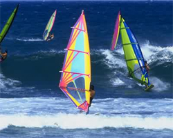
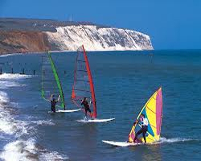

Windsurfing is a surface water sport that combines elements of surfing and sailing. It consists of a board usually 2 to 3 metres long, with a volume of about 60 to 250 liters, powered by wind on a sail. The rig is connected to the board by a free-rotating universal joint and consists of a mast, 2-sided boom and sail. The sail area generally ranges from 2.5 m2 to 12 m2 depending on the conditions, the skill of the sailor and the type of windsurfing being undertaken.
Some credit S. Newman Darby with the origination of windsurfing by 1965[1] on the Susquehanna River, Pennsylvania, USA when he invented the "sailboard", which, incidentally, he did not patent.[2][3][4][5][6] In 1964, Darby began selling his sailboards.[4] A promotional article by Darby was published in the August 1965 edition of Popular Science magazine. While Darby's "sailboard" incorporated a pivoting rig, it was "square rigged" and suffered all the associated limitations. You operated the sailboard with your back to the lee side of the kite shaped square sail. Darby's article boasted that "...you can learn to master a type of manoeuvering that's been dead since the age of the picturesque square riggers."
Windsurfing can be said to straddle both the laid-back culture of surf sports and the more rules-based environment of sailing. Although it might be considered a minimalistic version of a sailboat, windsurfing offers experiences that are outside the scope of other sailing craft designs. Windsurfers can perform jumps, inverted loops, spinning maneuvers, and other "freestyle" moves that cannot be matched by any sailboat. Windsurfers were the first to ride the world's largest waves, such as Jaws on the island of Maui, and, with very few exceptions, it was not until the advent of tow-in surfing that waves of that size became accessible to surfers on more traditional surfboards. Extreme waves aside, many expert windsurfers will ride the same waves as wavesurfers do (wind permitting) and are themselves usually very accomplished without a rig on a conventional surfboard.
At one time referred to as "surfing's ginger haired cousin" by the sport's legendary champion, Robby Naish,[7] windsurfing has long struggled to present a coherent image of the sport to outsiders. As a result of attempts to claim the word "windsurfer" as a trademark, participants have been encouraged to use different names to describe the sport, including "sailboarding" and "boardsailing". The term "windsurfing" has persisted as the accepted name for the sport, and the word "windsurfer" persists for both participants and equipment.
Windsurfing is predominately undertaken on a non-competitive basis. Organised competition does take place at all levels across the world and typical formats for competitive windsurfing include Formula Windsurfing, speed sailing, slalom, course racing, wave sailing, superX, and freestyle. These events are exciting to watch as sailors push the limits both physically and creatively with moves that look as impossible as thinking them up in the first place.
The boom of the 1980s led windsurfing to be recognized as an Olympic sport in 1984. However, windsurfing's popularity saw a sharp decline in the mid-1990s, thanks to licensing battles, and equipment becoming more specialized and requiring more expertise to sail. The sport experienced a modest revival, as new beginner-friendly designs became available.
However, starting in the 2000s, large numbers of avid windsurfers started giving up the sport and switching to the sport of Kitesurfing in a process known as "Going to the Dark Side" – an allusion to Star Wars and joining a rival sport.

Windsurfing as a Group Sport
History of Windsurfing
Windsurfing, as a sport and recreational activity, did not emerge until the latter half of the 20th century. But before this, there have been sailing boats of various designs that have used wind as the driving force for millennia, and Polynesians have been riding waves for many of them, undertaking day trips over oceans standing upright on a solid board with a vertical sail.[8] In 1948, 20-year old Newman Darby was the first to conceive the idea of using a handheld sail and rig mounted on a universal joint so that he could control his small catamaran—the first rudderless sailboard ever built that allowed a person to steer by shifting his or her weight in order to tilt the sail fore and aft.[9] Darby did not file a patent for the sailboard. However, he is widely recognized as its inventor as well as the first to conceive, design, and build a sailboard with a universal joint.[3] In his own words, Darby experimented throughout much of the 1950s and 1960s and it wasn't until 1963 that an improved sailboard with a conventional stayed sloop rig sail arrangement made it more stable than the one built in 1948.[10] In 1964, Darby began selling his sailboards.[4]
12-year old Peter Chilvers is often cited for inventing a sailboard in 1958.[11] In the 1960s, Jim Drake was the first to solve many problems of getting the board to sail while Hoyle Schweitzer was the first to be successful in marketing the sailboard.[11]
In 1964, during a discussion on water sports over a brandy at his home in Southern California, RAND Corporation aeronautical engineer Jim Drake and his former Rockwell boss and now good friend Fred Payne, who worked at The Pentagon, discussed options for creating a wind-powered water-ski which would allow Payne to travel on the Potomac River.[12] That night they developed the idea of a kite powered surfboard. On later reflection, Drake didn't like the integrity of the idea and dismissed it. There were already a number of sailboard designs available, and Drake also was concerned about the integrity of a design needing taut wire close to a human body to keep the sail upright.[12]
The technical problem was that most boats steer by varying the angle of attack in the water between the centre board and the rudder, and Drake's question came down to simple operation of how a standing person could control both the power of the sail as well as the direction of the craft.[12]
In 1967, while driving between his home and a contract at the Norton Air Force Base in San Bernardino, Drake had time to reflect on early 17th century based sail ship control. Rudders then were weak and ineffective, mostly used for trimming course. Hence with multi-masted boats, the sailors would trim the upper sails on the forward and rearwards masts to steer the ship.[12]
Dismissing the idea of a design with two upright sails, Drake decided to move the sail by rotation, as moving it linearly would require a mechanical system. Experimenting with a rotational design which became the concept for the universal joint, whereby the angle of attack of the sail to the board could be varied to allow control of both power and craft direction. Drake finished the design by using an earlier but for them failed invention of East Coast racing sail, and added a wishbone boom.[12]

Windsurfing off a scenic rocky coastline
Windsurfing International
On March 27, 1968, Hoyle Schweitzer and Jim Drake filed the very first windsurfing patent, which was granted by the USPTO in 1970.[13] There is no evidence that they had knowledge of any prior inventions similar to theirs, but Drake accepts in retrospect that although he can be credited with invention, he was "probably no better than third," behind mid-west based Newman Darby and Englishman Peter Chilvers.[12] The early windsurfing boards were made of foam in the garages of Schweitzer and Drake, with the booms, tees and daggerboards hand crafted in teak. Hoyle sub-contracted the manufacture of the teak items to boat builder Ennals Ives in Taiwan, but the quality and costs of transportation brought other issues.[14] One of the early customers was Bert Salisbury, and the first international shipment of a container of boards went to Sweden.[14] Early customers also included Lufthansa pilots who had read about the board, who simply included one as personal luggage on their return journey from Los Angeles International Airport.[14]
To ensure the quality of the product and handle marketing, in 1968 Hoyle and Diana Schweitzer founded the company Windsurfing International in Southern California to manufacture, promote and license a windsurfer design. The jointly owned patent was wholly licensed to Windsurfing International.[12] Working in a factory unit in Torrance, California, Hoyle, who had previously built personal surf boards in his garage, was unhappy with the durability of the early "Baja Board." He therefore developed a new mould, based on an old Malibu surfboard design that Matt Kivlin had developed, which the company sub-contracted for mass manufacture to Elmer Good.[14]
The company registered the term "windsurfer" as a trademark at the United States Patent and Trademark Office in 1973, launching the craft as a one-design class. Going one-design was influenced by the success of the Laser and Hobie Cat classes. Each Windsurfer had an identical computer-cut sail, a technology new at that time and pioneered by Ian Bruce and the Laser class.
In 1968, Hoyle's computer business collapsed, and he and Diane moved to Newport Beach; at the same time Drake accepted a two-year assignment to The Pentagon, and moved to Washington DC. Immediately, Hoyle offered Drake to buy out his half of the patent, and it was only when Hoyle pointed out ownership of the company that the relationship between the pair began to fall apart. Having returned to California, in 1973 Drake sold his half of the patent to Windsurfing International for the sum of $36,000.[12]
Different Types of Windsurfing Boards
Today there is a large variety of windsurfing boards for beginners to professionals.
Board Type
Purpose
Freeride
Comfortable recreational cruising
Formula Windsurfing Class
Shorter boards for racing
Wave
Smaller, lighter, more maneuverable for breaking waves